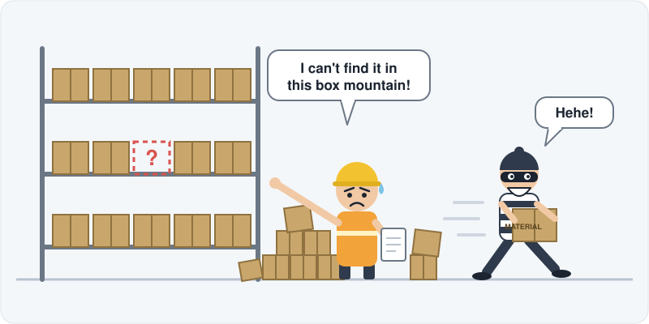
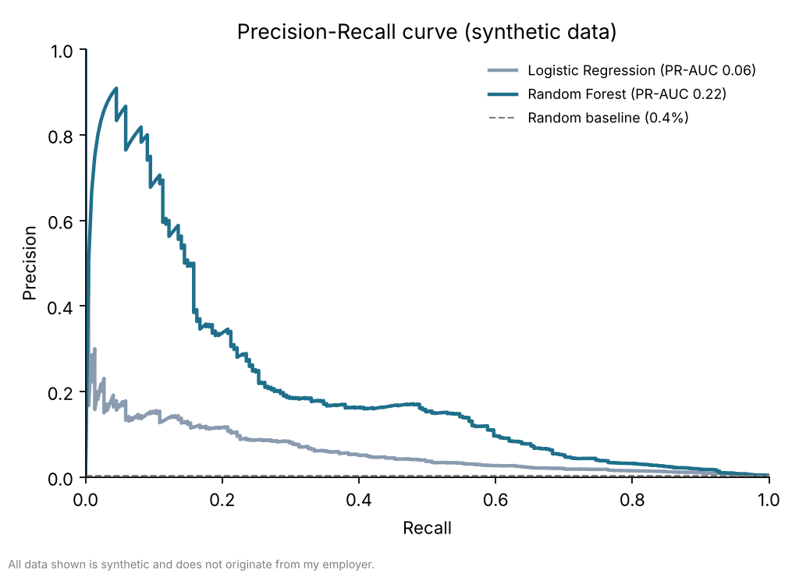
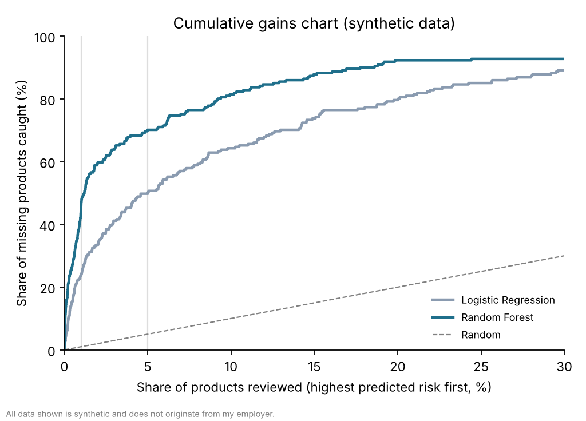
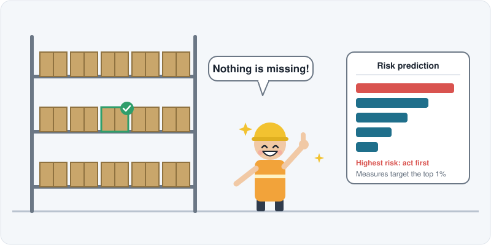

Predicting Missing Products with Machine Learning
Machine learning · Imbalanced classification
This case study demonstrates a real case I worked on, shown with synthetic data.
Problem
Products and materials can go missing for many reasons (e.g. in the supply chain process, during intercompany transfers or after a transport). These losses cause high costs, inconvenience or even longer lead times for customers and the business.

Data
One year of historical product data. This showcase uses a synthetic data set of 200,000 products, of which about 0.4% went missing. It preserves the structure of the real problem but none of its values.
Approach
- Trained a Logistic Regression (baseline) and a Random Forest to predict the probability that a product goes missing.
- Handled the strong class imbalance with class weights.
- Evaluated on a held-out test set with PR-AUC, since accuracy is misleading for rare events.
- Measured precision and recall for the top 1% and top 5% of products with the highest predicted risk, because these are the groups the business can realistically act on.
Results
| Model | PR-AUC | Top 1% precision / recall | Top 5% precision / recall |
|---|---|---|---|
| Random baseline | 0.004 | 0.4% / 1% | 0.4% / 5% |
| Logistic Regression | 0.06 | 8.8% / 24% | 3.7% / 50% |
| Random Forest | 0.22 | 16.8% / 46% | 5.2% / 70% |
- The Random Forest performs best. Its top 1% of risk scores contains about 40 times more missing products than a random selection.
- Reviewing only the top 5% of products would catch about 70% of all missing cases.
- Precision stays low because missing products are rare, so most flagged products are false positives. This is the trade-off of rare-event prediction. Concentrating on a small high-risk group still reduces the problem significantly.


Recommendation
Use the model to predict and target the highest-risk products.
Roll-out plan
Business value
The predictions let the business prevent losses proactively, plan resources better and spend effort where it matters most.

My role
I independently initiated, designed, built and tested the whole project, and prepared the recommendation and the roll-out plan for the business.
Tools
- SQL
- Python
- pandas
- numpy
- scikit-learn
- matplotlib